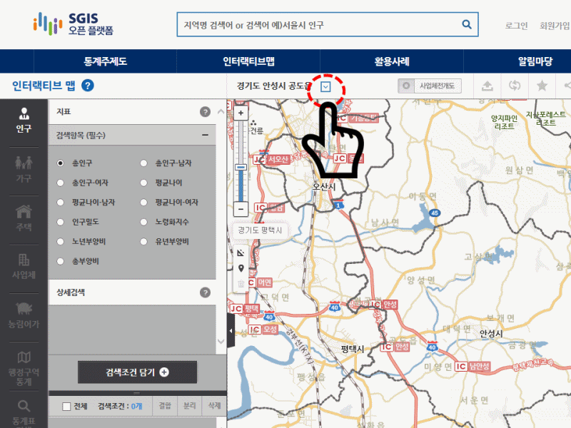
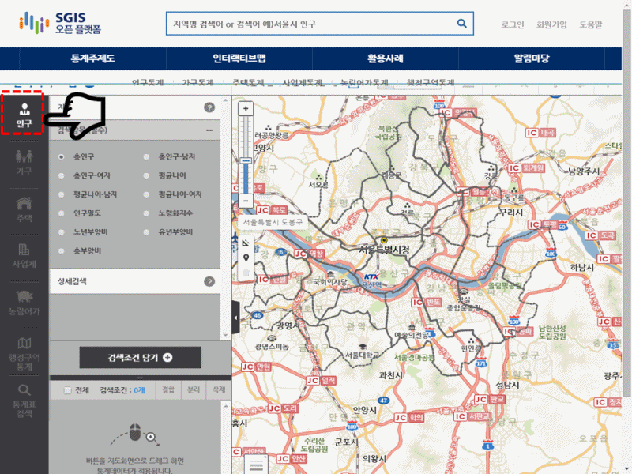
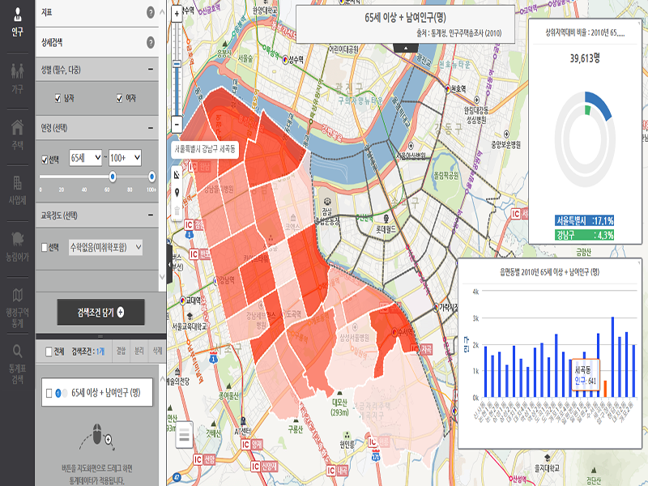
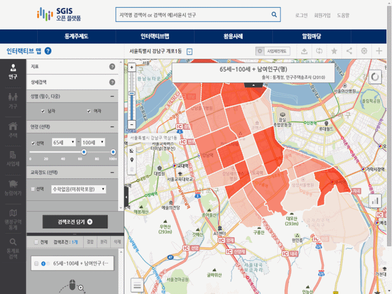
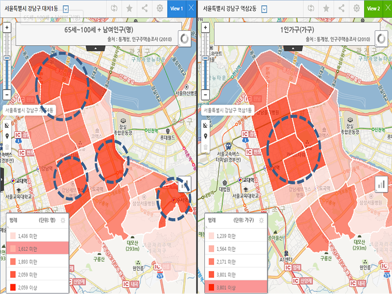
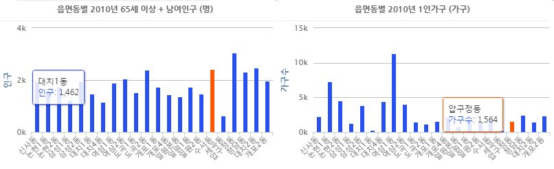
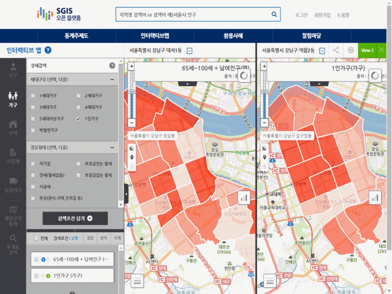

지역선택
1.지역선택 메뉴를 이용해 서울특별시 강남구로 이동합니다.
[Tip] 통계조회를 위해 지도 레벨 설정
보고 싶은 통계(시도, 시군구, 읍면동, 집계구)의 상위단계 경계가 보이도록 지도 레벨을 조절합니다.
- 지도 레벨
- 전국
- 시도
- 시군구
- 읍면동
- 통계 표시 단위
- 시도
- 시군구
- 읍면동
- 집계구
[예시] 강남구내 읍면동 통계를 보기 위해서는 강남구(시군구) 경계가 선택되도록 지도축척바 또는 마우스 휠을 이용해 지도레벨을 변경하여 지도 설정
통계선택
2. 강남구 동별 65세 이상 인구 통계를 검색합니다.
❶「인구」버튼 선택 → ❷「상세검색」 선택 → ❸연령(65세~100세이상)설정 → ❹「검색조건 담기」버튼 선택 → ❺강남구 경계 위로 통계버튼 끌어다 놓기 → ❻강남구 동별 통계지도 표시 → ❼강남구 동별 막대 그래프 확인 → ❽상위지역 대비 그래프 확인
[결과] 65세 이상 강남구 동별 인구
3. 65세이상 인구 통계와 1인가구 통계를 비교 합니다.
- 65세이상 인구가 많은 지역과 1인가구가 많은 지역을 두 개의 지도로 비교 가능합니다. ❶ 「분할뷰」 버튼 선택 → ❷ 「가구」버튼 선택 → ❸ 「1인가구」 설정 → ❹ 「검색조건 담기」버튼 선택 → ❺강남구 경계 위로 통계버튼 끌어다 놓기 → ❻ 범례확인
[결과] 65세이상 인구가 가장 많은 지역은 압구정동이고, 1인가구가 가장 많은 지역은 역삼1동으로 나타남.
 4.65세이상 1인가구 통계를 검색합니다.
- 65세이상 인구 조건과 1인가구 조건을 결합하여 65세이상 1인가구 통계를 찾을 수 있습니다. ❶ ‘65세이상 통계’와 ‘1인가구’ 검색조건 다중 선택 → ❷ 「결합」버튼 선택 → ❸ 「조건결합」 버튼 선택 → ❹ 강남구 경계 위로 결합된 통계버튼 끌어다 놓기 → ❺ 65세인구와 1인가구 통계지도 비교
[Tip] 통계 결합
- 범례결합 : View1 지도의 5단계 범례와 View2 지도의 5단계 범례를 더하여 5단계(상-중-하)의 새로운 지도를 생성합니다.
- 예)총인구(5단계) + 사업체수(5단계) ⇒ 상(인구도 많고, 사업체도 많은 지역)
- 조건결합 : 인구, 가구, 주택 항목에서 선택한 각각의 조건에 대해 새로운 교집합 통계지도를 생성합니다.
- 예) 65세이상(인구) ∩ 1인(가구) = 65세이상 1인가구